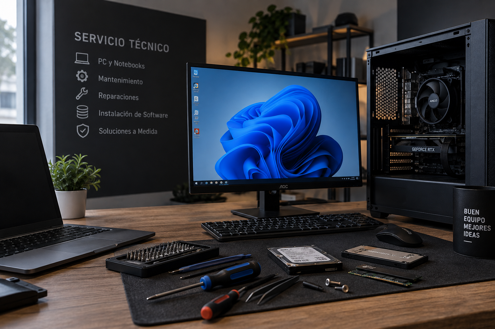

Limpieza de PC
Limpieza interna de la computadora, eliminación de polvo y mantenimiento general.
Servicio técnico de computadoras y notebooks
En TecnoFix nos dedicamos a la reparación, mantenimiento y optimización de computadoras y notebooks.
Trabajamos con hardware y software para solucionar problemas y mejorar el funcionamiento de tu equipo.
Solicitar servicio
Ofrecemos diferentes servicios para mantener tu computadora en buen estado.
Limpieza interna de la computadora, eliminación de polvo y mantenimiento general.
Instalación de Windows, controladores y programas necesarios.
Reemplazo e instalación de componentes como RAM, discos, fuentes y placas de video.
Revisión del equipo para encontrar problemas de hardware o software.
| Servicio | Descripción | Precio |
|---|---|---|
| Limpieza | Limpieza interna y mantenimiento | $20.000 |
| Formateo | Instalación de Windows y controladores | $25.000 |
| Diagnóstico | Revisión general del equipo | $10.000 |
Algunas opiniones de personas que confiaron en nuestro servicio.
"Muy buena atención y rápida reparación. La computadora quedó funcionando perfectamente."
"Me solucionaron un problema que tenía hace varios días. Muy recomendable."
"Excelente servicio. Me hicieron limpieza y mantenimiento de la PC."
"Muy buena atención y explicaron claramente cuál era el problema de mi notebook."
Ponete en contacto con nosotros y contanos qué problema tiene tu equipo.
Contactanos